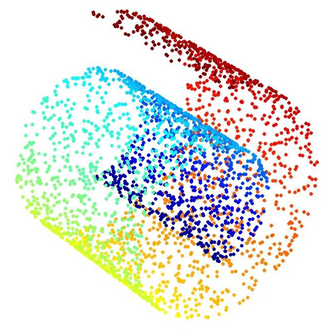

Dimensionality Reduction in the Wild: Gaps and Guidance

UBC Computer Science Technical Report TR-2012-03 (2012) Technical Report
Authors
Michael Sedlmair, Matt Brehmer, Stephen Ingram, Tamara Munzner
Materials
Abstract
Despite an abundance of technical literature on dimension reduction (DR), our understanding of how real data analysts are using DR techniques and what problems they face remains largely incomplete. In this paper, we contribute the first systematic and broad analysis of DR usage by a sample of real data analysts, along with their needs and problems. We present the results of a two-year qualitative research endeavor, in which we iteratively collected and analyzed a rich corpus of data in the spirit of grounded theory. We interviewed 24 data analysts from different domains and surveyed papers depicting applications of DR. The result is a descriptive taxonomy of DR usage, and concrete real-world usage examples summarized in terms of this taxonomy. We also identify seven gaps where user DR needs are unfulfilled by currently available techniques, and three mismatches where the users do not need offered techniques. At the heart of our taxonomy is a task classification that differentiates between abstract tasks related to point clusters and those related to dimensions. The taxonomy and usage examples are intended to provide a better descriptive understanding of real data analysts practices and needs with regards to DR. The gaps are intended as prescriptive pointers to future research directions, with the most important gaps being a lack of support for users without expertise in the mathematics of DR, and an absence of DR techniques for comparing explicit groups of dimensions or for relating non-linear embeddings to original dimensions.